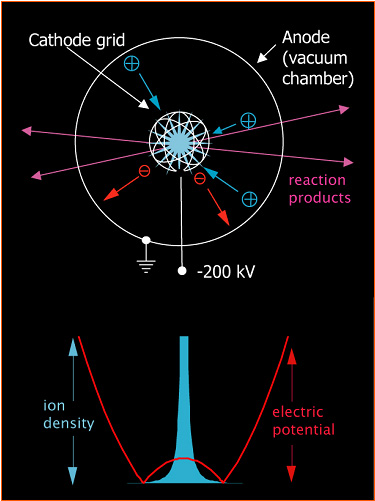
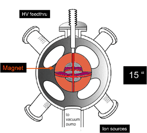

- Ions collide with the grid and are lost, removing energy and eventually destroying the grid. The best number of re-circulations obtainable with grids is about 20, two orders of magnitude too low for net energy production.
- The density at the center of the machine is very limited: as the number of ions occupying the space at the center of the machine increases, positive charge builds up there and repels further incoming ions, severely limiting the fusion rate at the core, and thus limiting the power output of the machine.
- Ions hit each other obliquely and their velocities become randomized. Ions rapidly develop angular momentum which de-focuses the spherically converging beams, resulting in lower densities and increased collisions with the grid structures.
Technology
Inertial Electrostatic Confinement (IEC)
In an IEC machine, beams of ions are accelerated by electrodes towards the center of a vacuum chamber where they collide at high energies and densities. Some ions undergo fusion; the ones that do not pass through the center and are turned around and re-accelerated towards the core. The voltages required to accelerate ions to speeds high enough for fusion are modest - of the order of 10,000 - 100,000 Volts - only about ten times higher than the voltages in a typical television. Such voltages are very easily obtained with simple power supplies, but particles with the resultant kinetic energies are in fact at a temperature of 100s of millions of degrees, ten times hotter than the interior of the sun.

Figure 1: Schematic of basic IEC device and method for causing fusion reactions using simple grids.
The accelerating electrode in the center of an IEC device is commonly comprised of a conducting grid, which is about 90% transparent to ions passing through it. If there were no losses, each ion would re-circulate indefinitely and eventually undergo fusion with another ion, and there would be a net production of energy. In practice, however, such conventional IEC machines suffer from several insurmountable problems that prevent net energy production:
For these reasons, IEC fusion has been largely abandoned by fusion researchers, except for isolated groups that hope to develop IEC devices for non-power producing applications.
How is IEC different to the Tokamak?
Tokamaks must be very large, because of the fundamental limits imposed by high energy particles confined by magnetic fields. IEC devices can be made very small, yielding 10-100 kW of power from a machine the size of an automobile engine.
Tokamaks are based on closed field-line magnetic topology and therefore prone to many instabilities and complications. A reactor must therefore be extremely complex, which means high costs. An IEC device is based on completely different confinement principles, and is not subject to any known instabilities.
Tokamaks, operating with plasma in a quasi-equilibrium state, must operate with tritium as fuel, which carries with it radiation and security hazards, and produces low level radioactive waste. An IEC device is not in thermal equilibrium, and can achieve ultra-high plasma temperatures with trivial ease. It therefore could exploit the reactions of P-B11 or He3, so called advanced fuels which are characterized by the total or near-total absence of neutron radiation but which require higher temperatures.
Multi-pole Ion beam eXperiment (MIX)
By adding a particular type of magnetic field to a traditional spherical IEC machine, using a shaped electromagnet which doubles as the accelerating cathode, we are able to dramatically lower the losses of energetic ions that limit the efficiency of traditional designs.

Figure 2: Schematic of MIX device.
The magnetic field confines electrons to the reaction region at the center of the machine; electrons enter via secondary emission from the electromagnet itself. The electrons bulk-neutralize the positive charge of the ions, and allow the ions to converge to very high densities at the center: the density can be increased by a factor of 10,000 or more over conventional IEC devices.
The magnetic field also creates space charge lenses at the openings of the electromagnet so-called magnetic mirrors, which in turn serve to continually refocus beams of ions as they pass in and out of the core. The focusing action can be made to exactly counteract the effect of Coulomb collisions between particles, and ions can re-circulate on stable orbits thousands of times through the device without colliding with a material structure, preventing the loss of energy that limits the efficiency of conventional machines. In this way the density will be greatly increased while the input power to the device will be reduced over conventional IEC machines.
Both effects will help solve the problems that have limited previous IEC experiments' performance.
With higher densities, electrons and ions can arrange themselves in alternating layers of positive and negative charge, forming "virtual electrodes" that can result in yet higher densities of ions at the center of the machine, and a trapped ion population that never intersects any material structure. Evidence for this effect has previously been observed in operating IEC machine.
The addition of a small radio frequency modulation of the cathode voltage will drive trapped ions to converge simultaneously at megahertz rates in the very center of the machine at high energies, provided a harmonic electric potential can be maintained inside the cathode, an effect called POPS (Periodically Oscillating Plasma Sphere) that has been documented in previous IEC experiments.
Pulsed operation will potentially raise the fusion rate still further.
We have plans to extract ions which have developed non-ideal orbits at low energy, thus substantially increasing the energy confinement time and further raising efficiency.